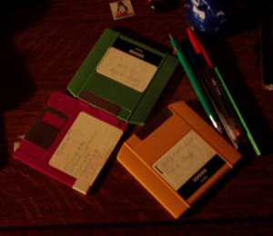
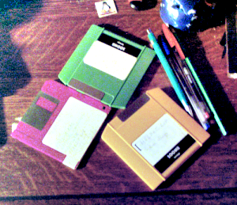

Figure 16.207. “Retinex” example

Original image

“Retinex” filter applied. Note new details in the upper right corner.
Retinex improves visual rendering of an image when lighting conditions are not good. While our eye can see colors correctly when light is low, cameras and video cams can't manage this well. The MSRCR (MultiScale Retinex with Color Restoration) algorithm, which is at the root of the Retinex filter, is inspired by the eye biological mechanisms to adapt itself to these conditions. Retinex stands for Retina + cortex.
Besides digital photography, the Retinex algorithm is also used to make the information in astronomical photos visible and, in medicine, detect poorly visible structures in X-rays or scans.
![[Note]](images/note.png)
|
Note |
|---|---|
|
This command only works on RGB images. If the image is Grayscale or Indexed, the menu entry is disabled. |
These options call for notions that only mathematicians and imagery engineers can understand. In actual practice, the user has to grope about for the best setting. However, the following explanations should help out the experienced GIMP user.
- Level
-
Here is what the plug-in author writes on his site [PLUGIN-RETINEX]: “To characterize color variations and the light source, a difference in intensity is made between the (Gaussian) filter responses at different scales. These parameters allow you to specify how to distribute the values between the minimum scale value (sigma 2.0) and the maximum (sigma equal to image size)”.
- Uniform
-
Uniform tends to treat both low and high intensity areas equally.
- Low
-
As a rule of thumb, low does “flare up” the lower intensity areas on the image.
- High
-
High tends to “bury” the lower intensity areas in favor of a better rendering of the clearer areas of the image.
- Scale
-
Determines the depth of the Retinex scale. Minimum value is 16, a value providing rough, unrefined filtering. Maximum value is 250. Optimal and default value is 240.
- Scale division
-
Determines the number of iterations in the multiscale Retinex filter. The minimum required, and the recommended value is three. Only one or two scale divisions removes the multiscale aspect and falls back to a single scale Retinex filtering. A value that is too high tends to introduce noise in the picture.
- Dynamic
-
As the MSR algorithm tends to make the image lighter, this slider allows you to adjust color saturation contamination around the new average color. A higher value means less color saturation. This is definitely the parameter you want to tweak for optimal results, because its effect is extremely image-dependent.